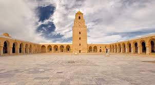

Grande Mosquée de Kairouan
Fondée en 670, la Grande Mosquée de Kairouan est l'un des plus anciens et des plus importants lieux de culte islamique. Chef-d'œuvre architectural, elle est inscrite au patrimoine mondial de l'UNESCO et représente un modèle d'architecture islamique médiévale.